Temporada 13
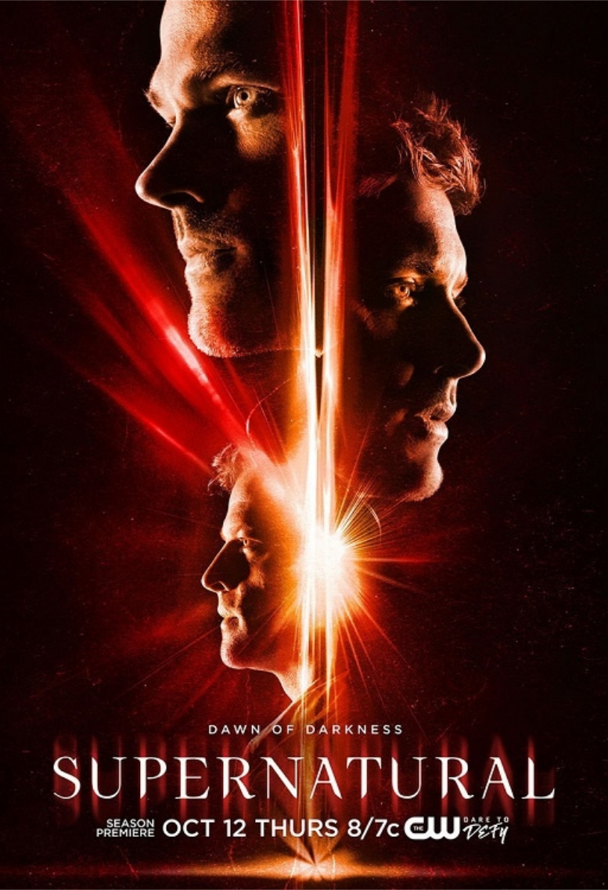
A temporada 13 começa exatamente onde a anterior terminou, com Sam e Dean em luto depois da perda de sua mãe, o adeus de Crowley e a triste morte de Castiel. O nascimento de Jack deixa os irmãos Winchester com opiniões diferentes de como lidar com um Nephilim. Após ser levada pela fenda, Mary deve aprender a sobreviver ao Lucifer e ao mundo apocalíptico. Sam e Dean começam a explorar o que Jack é capaz de fazer com seus poderes. Uma visita inesperada de Donatello (profeta) alerta os rapazes para o fato de que Jack precisará de mais proteção do que os Winchesters pode fornecer. Há um novo Príncipe do Inferno na cidade, Asmodeus, e com Lucifer fora de cena, ele coloca seus olhos sobre Jack.
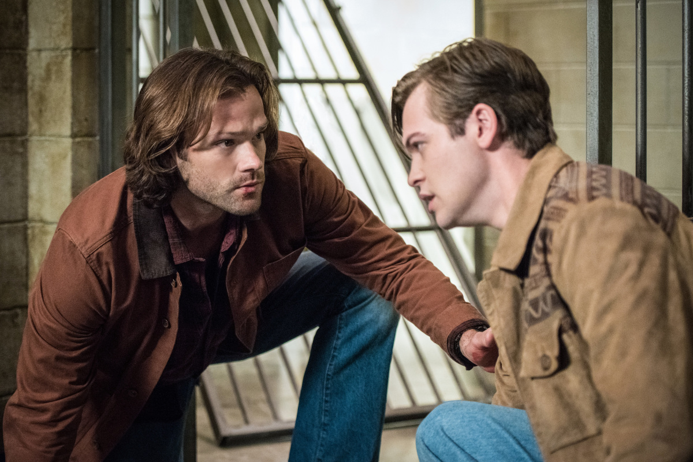
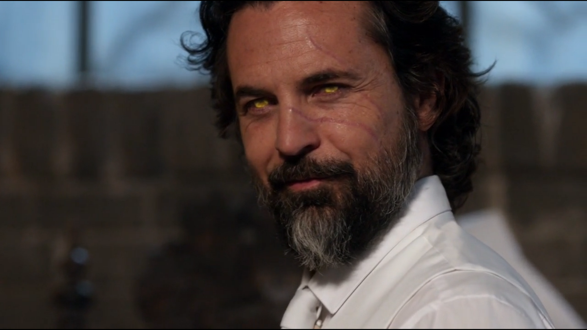
Depois de algumas tentativas de fazer a coisa certa acabarem em tregédia, Jack decide que é melhor ele ficar longe de Sam, Dean e Castiel. Enquanto Sam e Dean continuam sua busca por Jack, com Asmodeus em sua cola, eles se encontram com um inimigo familiar. Enquanto isso, Lucifer consegue escapar de Miguel e encontra um aliado improvável e em grande parte não desejado. Jack, desesperado para provar a Sam e Dean que ele é bom e que ele pode controlar os seus poderes, pede a ajuda de uma caçadora de sonhos chamada Kaia para ajudá-lo a encontrar Mary Winchester e salvá-la do universo alternativo. No entanto, quando os planos vão mal, os irmãos Winchester são aqueles que precisam ser salvos.
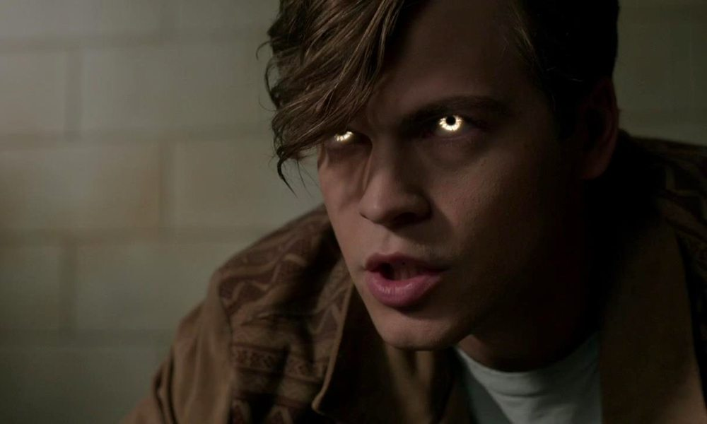
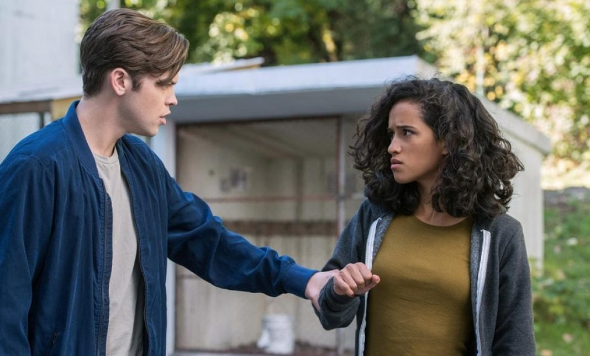
Dean é vítima de algumas bruxas, as irmãs Jamie e Jennie Plum, que conseguem roubar um poderoso livro de feitiços dos irmãos Winchester. Quando Sam e Dean vão atrás do livro, eles recebem ajuda de um aliado poderoso e surpreendente quando Rowena, de volta da morte, intervém para ajudá-los. Sam, Dean e Castiel procuram por Lucifer que, entretanto, atinge um acordo improvável com uma curadora de fé local chamada Irmã Jo. Asmodeus fica mais perto de encontrar Jack.
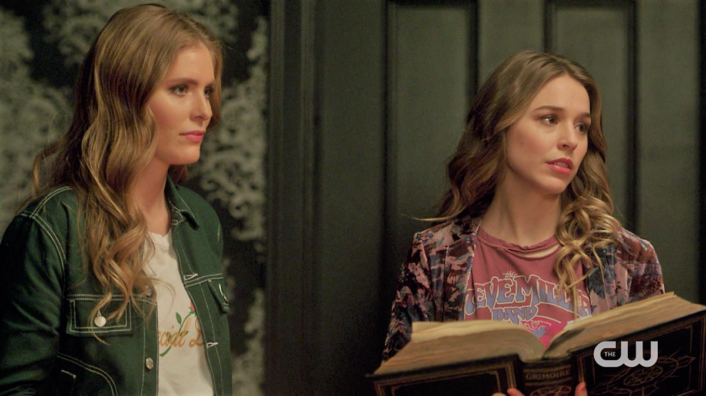
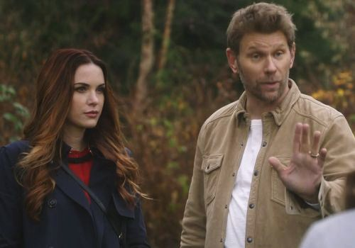
Jack e Mary conseguem escapar das garras de Miguel e acabam encontrando um aliado no "mundo apocalíptico", Bobby Singer. Enquanto isso, Sam, Dean e Castiel continuam a procurar uma maneira de abrir uma fenda, não percebendo que um dos seus próprios pode estar trabalhando contra eles e custando-lhes um tempo precioso. Sam e Dean estão perto de coletar tudo o que precisam para abrir uma fenda no mundo apocalíptico e possivelmente resgatar Mary e Jack. O único ingrediente que falta leva os Winchesters a um mercado negro para relíquias religiosas, onde nem tudo é sempre como parece.
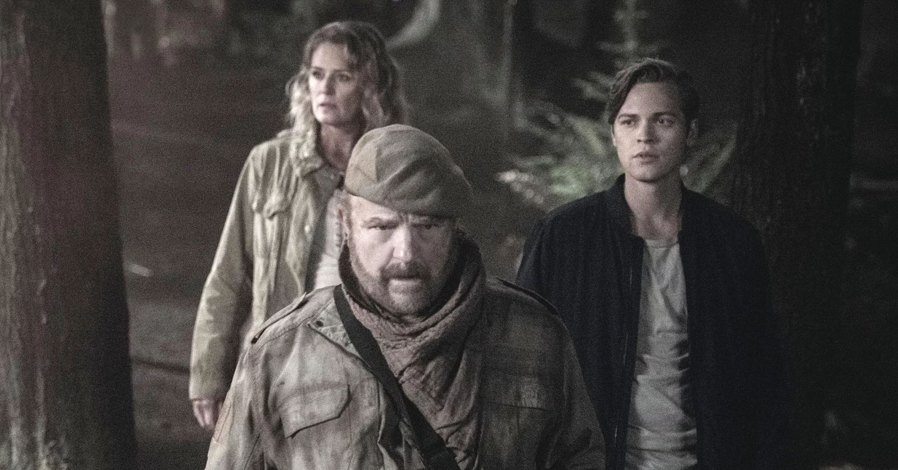
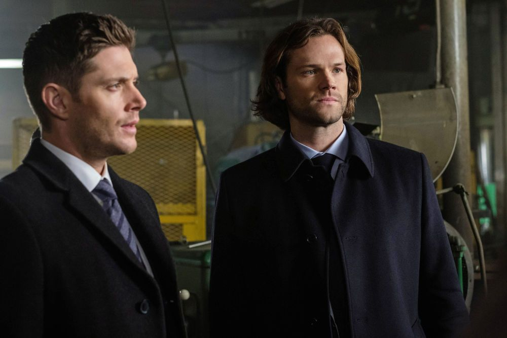
Lucifer comanda o Céu, mas as coisas não estão indo exatamente como o planejado, irritando sua primeira dama, Jo. Sam e Castiel ficam perplexos com o retorno de Gabriel.Enquanto isso, Dean fica uma passo mais perto de achar Mary e Jack. Sam e Dean devem parar Rowena, que está em uma missão mortal. Enquanto isso, Castiel procura no céu anjos para recruta-los para a proxima invasão, mas ele fica chocado não só pelo o que encontra, e sim com quem. Sam, Dean, Castiel e Gabriel devem trabalhar juntos se tiverem alguma esperança de trazer Mary e Jack para casa. Enquanto isso, o encontro de Rowena com Lúcifer pode alterar o resultado da jornada de um de nossos heróis. Nossos heróis, Sam e Dean Winchester, continuam a ser testados na batalha entre o bem e o mal, mas uma decisão impulsiva pode alterar a vida de um dos irmãos para sempre.
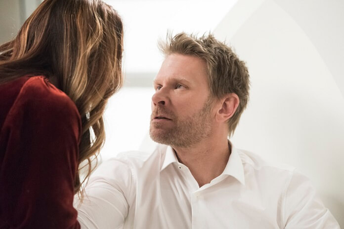
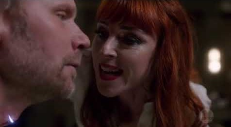